Breakthroughs in Consensus#
“The longest chain not only serves as proof of the sequence of events witnessed, but proof that it came from the largest pool of CPU power.” – Satoshi Nakamoto, Bitcoin: A Peer-to-Peer Electronic Cash System, 2008
A blockchain is a shared record of payments, like a Python list of blocks, where each block holds a batch of transactions. Many computers, called nodes, each keep a copy. They do not trust each other, and some may lie or crash.
A digital signature shows who authorized a payment. It is a short value computed from the message with a secret key, which only the owner knows. Anyone with the matching public key can check it. Nobody can forge it without the secret key. But a signature cannot say which of two conflicting payments came first.
Consensus answers that question. It is a method by which all honest nodes end up with the same list, in the same order. There are two broad ways to get it:
Voting among known participants. A fixed group votes, and a large enough majority decides.
Making some resource scarce. Anyone may join, but influence costs something that cannot be faked: computation (proof of work) or coins locked up as a deposit (proof of stake, where the coins are the stake).
This chronology traces the ideas behind blockchainkit.consensus along
three threads that meet in Bitcoin and Ethereum, the two largest blockchains:
Voting runs from the Byzantine generals to PBFT.
Scarce computation runs from pricing via processing to Nakamoto consensus, with the gambler’s ruin supplying the security argument.
Scarce stake runs from Peercoin to Casper finality and Algorand’s committees.
The models are deliberately idealized. Exact conventions and model boundaries lists where they depart from deployed protocols.
The page uses a few conventions throughout:
A hash function \(H\) is like Python’s
hash(), but built so that nobody can find two inputs with the same output, or an input that gives a chosen output. SHA-256, used here, turns any bytes into a 256-bit number. Its output looks random: changing one input bit changes about half the output bits.\(a \bmod p\) is
a % p, and \(a \equiv b \pmod p\) meansa % p == b % p.\(\arg\max_x f(x)\) is the \(x\) with the largest \(f(x)\):
max(xs, key=f).\(\Pr[A]\) is the probability of \(A\), and \(E[X]\) is the expected (average) value of \(X\).
\(f\) (or \(m\)) is the number of faulty nodes a protocol can survive, out of \(n\) in total.
1656 – The Gambler’s Ruin: Catching Up from Behind#
A player is \(z\) points behind. What is the chance of ever drawing level?
In 1656 Pascal posed to Fermat the problem of two gamblers playing until one is ruined. Huygens published it the next year. Model the game as a random walk: a counter that, at every step, moves up or down by one at random.
Start \(z\) steps behind the goal.
At each step, move one closer with probability \(q\).
Otherwise, with probability \(p = 1 - q\), move one further away.
Repeat forever, and ask whether the goal is ever reached.
The chance of ever making up a deficit of \(z\) is
In words: a player who wins at least half the steps catches up for certain, sooner or later. A weaker player’s chance shrinks by a factor \(q/p\) for every extra step of deficit.
An attacker mining a secret chain is exactly this player. Mining means racing to find the next block, and a miner’s share of all the guesses made per second is its share of the hashrate (see the 1997 entry).
Each new block is one step.
With probability \(q\), the attacker’s share of the hashrate, the attacker finds it and closes the gap by one.
Otherwise the honest network finds it and widens the gap by one.
Section 11 of the Bitcoin whitepaper applies the result to an attacker racing the honest chain. Below half the hashrate, the chance of ever catching up falls exponentially with every block of lead. For example, with \(q = 0.1\) and a lead of 6 blocks it is \((1/9)^6 \approx 2 \times 10^{-6}\). With \(q = 0.3\) it is \((3/7)^6 \approx 0.006\).
Implementation: blockchainkit.consensus.systems.catch_up.eventual_catch_up().
References: C. Huygens, De ratiociniis in ludo aleae (1657), problem 5; the problem was posed in the Pascal-Fermat correspondence of 1656.
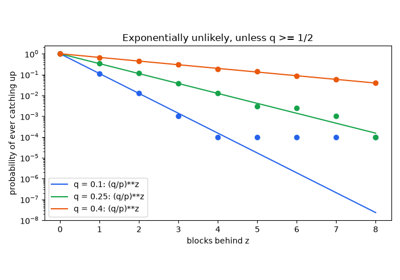
The gambler’s ruin: catching up from behind (Pascal, Fermat and Huygens 1656)
1982 – The Byzantine Generals Problem#
Several computers must agree on one decision. Some of them are faulty and may send different, false messages to different computers. How many faulty ones can the rest survive?
Lamport, Shostak and Pease told it as a story. Generals surround a city. They must all attack or all retreat. One general, the commander, gives the order. The others, the lieutenants, carry it out. Some generals are traitors who tell different generals different things. A fault of this kind, where a node may do anything at all, is called Byzantine. The authors gave the problem its name and its answer. With oral messages the loyal generals can agree despite \(m\) traitors if and only if
Oral messages are unsigned: a general can claim that someone else said something they never said. The formula says that the loyal generals must number more than twice the traitors. One traitor needs at least four generals in total.
Their algorithm OM(\(m\)) works like this:
The commander sends its order to every lieutenant.
Each lieutenant relays the order it received to every other lieutenant.
The relaying repeats recursively, for \(m\) rounds in total.
Each lieutenant decides by majority over all the versions it has heard.
The bound is tight already for three generals and one traitor:
Suppose the commander says “attack” to one lieutenant and “retreat” to the other.
The first lieutenant hears “attack” from the commander and “retreat” relayed by its peer.
A loyal commander and a lying peer would produce exactly the same messages.
So the lieutenant cannot tell which one is the traitor, and no rule can be right in both cases.
With signed messages a forged relay would be detected, and the bound disappears. Later papers write the number of faults as \(f\), and the \(3f + 1\) bound reappears in every Byzantine fault-tolerant blockchain protocol.
Implementation: blockchainkit.consensus.systems.byzantine.oral_messages()
runs OM(\(m\)) with a configurable traitor strategy.
References: L. Lamport, R. Shostak, and M. Pease, The Byzantine Generals Problem, ACM Transactions on Programming Languages and Systems 4(3), 382–401 (1982). DOI.
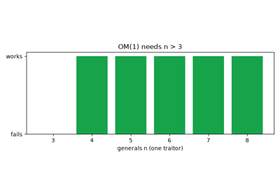
The Byzantine generals problem (Lamport, Shostak and Pease 1982)
1983 – Ben-Or’s Randomized Consensus#
Can computers agree when messages may take any amount of time to arrive?
Some terms first:
A process is one participant, a program running on one computer.
A network is asynchronous if messages always arrive eventually, but with no upper limit on the delay. A slow process and a crashed one then look the same.
A protocol is deterministic if it makes no random choices: the same inputs and message order always give the same result.
A crash fault is milder than a Byzantine one. The process simply stops and never lies.
The same year, Fischer, Lynch and Paterson presented the impossibility result of the 1985 entry below. No deterministic protocol can guarantee agreement in an asynchronous network where a process may crash.
Michael Ben-Or escaped it by letting processes flip coins. This gave the first asynchronous consensus protocol that tolerates \(f\) crashes among \(n > 2f\) processes. Each process holds a current value, 0 or 1, and the protocol runs in rounds:
Report. Every process sends its current value to all.
It waits for \(n - f\) reports, not all \(n\), because the other \(f\) may never arrive.
Propose. A process proposes \(v\) if more than \(n/2\) of the reports it received are \(v\). That is a strict majority of all processes, not just of those it heard from. Otherwise it proposes nothing.
It again waits for \(n - f\) proposals.
Decide or adopt.
After at least \(f + 1\) proposals of \(v\), it decides \(v\).
After at least one proposal of \(v\), it adopts \(v\) as its next value.
After none, it flips a coin for its next value.
Start the next round.
Why it works:
Two values cannot both have a strict majority. So all proposals in a round name the same value.
Once all correct processes hold the same value, every one of them proposes it and decides.
Fresh coins are flipped in every round, so that moment comes sooner or later.
The message scheduler is whatever decides the order in which messages arrive; think of it as an adversary trying to stall the protocol. Against any scheduler, termination therefore has probability one. Its limits:
With \(n\) independent coins, the expected number of rounds can be exponential in \(n\). All the coins must happen to agree.
Later common-coin protocols, in which all processes see the same random bit each round, reduced this to a constant.
Implementation: blockchainkit.consensus.systems.randomized.ben_or(),
with an adversarial or random message scheduler.
References: M. Ben-Or, Another Advantage of Free Choice: Completely Asynchronous Agreement Protocols, PODC ‘83, 27–30 (1983). DOI.
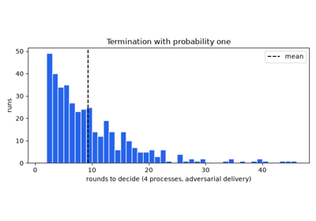
Randomized consensus: agreeing by flipping coins (Ben-Or 1983)
1985 – FLP: No Deterministic Consensus in an Asynchronous Network#
Is there any deterministic protocol that always reaches agreement when messages can be delayed?
Fischer, Lynch and Paterson (FLP) proved there is not. Suppose messages can be delayed arbitrarily and even one process might crash. Then every deterministic protocol has a delivery order, a schedule, in which it never decides.
The idea of the proof is a game against an adversary. The adversary cannot change messages. It only chooses the order in which they are delivered.
Call a state of the whole system bivalent if both decisions, 0 and 1, are still reachable from it.
The proof shows that some starting state is bivalent.
It then shows that from any bivalent state, the adversary can deliver the next message at a moment that keeps the state bivalent.
Repeating this forever, the protocol never decides.
The conference version appeared in 1983; this is the journal version. Every practical consensus protocol escapes by weakening one assumption:
Randomization (Ben-Or). The protocol is no longer deterministic.
Partial synchrony (Dwork, Lynch and Stockmeyer). Delays are eventually bounded.
Probabilistic finality (Nakamoto). A decision is never certain, only ever less likely to be reversed.
Implementation: blockchainkit.consensus.systems.randomized.ben_or()
with a deterministic coin shows one such stalling schedule: without its
coins, Ben-Or’s protocol is deterministic again and falls under the theorem.
References: M. J. Fischer, N. A. Lynch, and M. S. Paterson, Impossibility of Distributed Consensus with One Faulty Process, Journal of the ACM 32(2), 374–382 (1985). DOI.
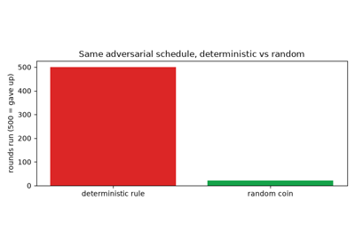
FLP: no deterministic consensus in an asynchronous network (1985)
1988 – Partial Synchrony: Progress after an Unknown Stabilization Time#
Networks are usually fast and sometimes slow. Can a protocol rely on that without knowing how fast “fast” is?
Dwork, Lynch and Stockmeyer introduced partially synchronous models. In these, a delay bound \(\Delta\) exists but is unknown. Or it holds only after an unknown moment, the global stabilization time (GST). Think of GST as the time a network outage ends: nobody knows when, but it does end. They showed that consensus is then solvable for \(n \ge 3f + 1\) Byzantine faults.
The design separates two goals:
Safety: honest nodes never decide different things. It rests on overlapping quorums, never on timing. A quorum is a set of votes large enough that any two such sets share a member (see the 1999 entry). So the protocol stays safe even while the network misbehaves.
Progress: something is eventually decided. It needs a leader, one node that proposes, whose messages arrive before the others give up on it.
Progress comes from views, numbered attempts, each with its own leader:
View \(v\) starts at time \(t_v\) with a new leader.
The others wait for the leader up to a timeout \(T_v = T_0\,2^{v}\). The timeout doubles after every failed view.
If the leader’s messages do not arrive in time, everyone moves to view \(v + 1\).
Views keep starting and timeouts grow without bound. So some view eventually starts after GST with a timeout longer than the delay:
Read \(\exists\) as “there is some” and \(\wedge\) as “and”. In
Python: any(t[v] >= GST and T[v] >= Delta for v in views) is eventually
true.
Rotating the leader among the views that follow reaches an honest one within \(f + 1\) views, since at most \(f\) leaders are faulty.
Progress is guaranteed without ever knowing \(\Delta\).
PBFT, Tendermint and HotStuff all assume this model.
Implementation: blockchainkit.consensus.systems.synchrony.view_changes().
References: C. Dwork, N. Lynch, and L. Stockmeyer, Consensus in the Presence of Partial Synchrony, Journal of the ACM 35(2), 288–323 (1988). DOI.
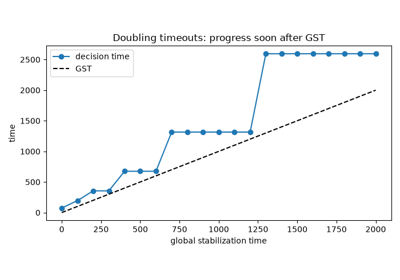
Partial synchrony: timeouts that eventually work (Dwork, Lynch and Stockmeyer 1988)
1992 – Pricing via Processing#
Sending an email costs nothing, so sending a million junk emails costs nothing too. How can a message be made to cost something?
Dwork and Naor proposed that every message should cost its sender a little computation. It should be:
too little to bother an ordinary user;
too much for someone sending millions;
instantly checkable by the recipient.
Their pricing functions are puzzles with three properties:
Moderately hard to compute.
Easy to verify.
Cannot be amortized across messages. Solving one puzzle gives no shortcut for the next, so a million messages cost a million times as much.
One example is the modular square root. Given \(x\) and a prime
\(p\), find \(r\) with r * r % p == x. This works when \(x\)
has a square root modulo \(p\) at all, and when \(p\) leaves
remainder 3 on division by 4 (p % 4 == 3):
The sender computes \(r\) with
pow(x, (p + 1) // 4, p).The sender attaches \(r\) to the message.
The recipient checks
r * r % p == x % p.
The left side is the sender’s work. pow uses square-and-multiply: one
squaring per bit of the exponent, plus a multiplication for about half of
the bits, so about \(1.5 \log_2 p\) in all. The right side is the
recipient’s single multiplication.
The limits:
The gap between computing and checking is only a factor of about \(\log_2 p\).
Raising the price means enlarging \(p\). That also makes the verifier’s one multiplication more expensive.
Later designs therefore moved to puzzles whose cost grows exponentially in a tunable parameter while checking stays a single cheap step. The idea of attaching a verifiable computational cost is the root of proof of work.
Implementation: blockchainkit.consensus.systems.pricing.modular_square_root()
counts its multiplications.
References: C. Dwork and M. Naor, Pricing via Processing or Combatting Junk Mail, CRYPTO ‘92, LNCS 740, 139–147 (1993). DOI.
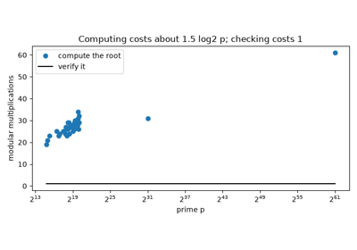
Pricing via processing: making junk mail expensive (Dwork and Naor 1992)
1997-2002 – Hashcash and Proofs of Computational Effort#
Pricing via processing needs a puzzle whose cost can be raised as far as wanted, while checking stays one cheap step.
Adam Back’s Hashcash (proposed in 1997, described in a 2002 paper) priced requests with a hash puzzle. Because a hash’s output looks random, the only way to find an input with a rare output is brute force.
The sender writes a header: the message details plus a counter called the nonce (a “number used once”).
The sender hashes the header and checks whether the hash starts with \(d\) zero bits.
If not, it increments the nonce and tries again.
When a hash succeeds, the sender attaches the header.
The recipient checks the answer with a single hash.
Each attempt succeeds with probability \(2^{-d}\), like flipping \(d\) coins and needing all tails:
The first condition says that the 256-bit hash, read as a number, is below a
target. That is the same as its first \(d\) bits being zero:
H(header) >> (256 - d) == 0. Here \(T\) counts attempts, and on
average it takes \(2^d\) of them.
The cost is tunable and exponential in \(d\). Each extra bit doubles it. At \(d = 20\), about a million hashes, the search takes about a second in Python. Bitcoin’s network made around \(10^{21}\) hashes a second in the mid-2020s. At one block per ten minutes, each block then needs about \(2^{79}\) attempts.
The time is random. Each attempt is an independent trial, so \(T\) is geometric: it is the number of coin flips up to the first success. Any one search can finish much earlier or later than the average.
The trials are memoryless. Past failures do not bring success closer, so a search that has already run for a while has no head start.
Bitcoin’s proof of work is Hashcash applied to block headers. Because the trials are memoryless, blocks across the whole network arrive as a Poisson process: events that happen independently at a constant average rate, like the clicks of a Geiger counter. The 2008 double-spend calculation relies on this.
Implementation: blockchainkit.consensus.systems.pow.mine() searches a
bounded nonce interval; blockchainkit.consensus.systems.pow.valid_pow()
checks one hash. Difficulty counts leading zero bits of SHA-256 over this
package’s header; Bitcoin compares the double SHA-256 of an 80-byte header with
a full 256-bit target.
References: A. Back, Hashcash — A Denial of Service Counter-Measure (2002), describing the earlier 1997 proposal. Author’s paper.
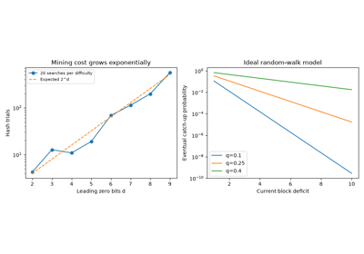
Hashcash: proof of work you can verify in one hash (Back 1997)
1999 – Practical Byzantine Fault Tolerance#
The Byzantine generals’ algorithm sends a number of messages that grows exponentially with the number of traitors. Can a real service survive lying servers at a reasonable cost?
Castro and Liskov made Byzantine fault tolerance practical. A group of \(3f + 1\) replicas, copies of the same service, keeps one consistent log, an ordered list of requests, even if \(f\) of them lie. One replica, the leader, orders requests. For each request:
Pre-prepare. The leader sends the request and its position in the log to all replicas.
Prepare. Each replica sends every other replica a vote for that request at that position.
Commit. A replica that has collected a quorum of prepare votes sends a commit vote to all.
A replica that has collected a quorum of commit votes executes the request.
If the leader seems faulty, the replicas run a view change to a new leader.
A replica cannot wait for all \(3f + 1\) votes, because \(f\) faulty replicas may stay silent. So it acts on a quorum of the \(2f + 1\) it can count on. Safety then rests on quorum intersection:
In words: two quorums of \(2f + 1\) drawn from \(3f + 1\) replicas must share at least \(f + 1\). There are not enough replicas for them to be separate. With \(f = 1\): two quorums of 3 out of 4 share at least 2.
Two quorums share at least \(f + 1\) replicas, so at least one of them is honest.
That replica never votes for two values in one view.
So two conflicting values can never both gather a quorum.
With more than \(f\) faults that guarantee disappears.
Tendermint, HotStuff and many proof-of-stake chains descend from PBFT.
Implementation: blockchainkit.consensus.systems.pbft.pbft_round() runs
one normal-case round with a fixed leader and synchronous delivery, with
blockchainkit.consensus.systems.pbft.quorum_size(). It has no view
changes, checkpoints, request batching or message authentication.
References: M. Castro and B. Liskov, Practical Byzantine Fault Tolerance, 3rd Symposium on Operating Systems Design and Implementation (OSDI), 173–186 (1999).
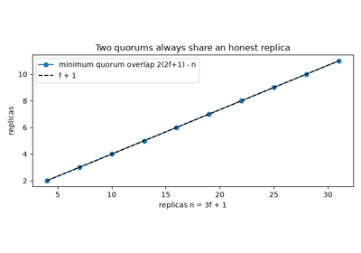
Practical Byzantine Fault Tolerance (Castro and Liskov 1999)
2008-2009 – Nakamoto Consensus: Bitcoin Combines the Ingredients#
Alice could sign two payments that each spend her entire balance. Both signatures are valid, but both payments cannot be accepted. This is the double-spending problem. Working digital cash systems before 2008 solved it with a trusted party, such as a bank, that kept the one official list.
Nakamoto’s 2008 proposal solved it without a trusted party. It combined earlier ingredients:
Signatures to authorize payments.
Hash-linked blocks. Each block stores the hash of the block before it, so changing an old block changes every hash after it.
Proof of work (Hashcash) to make each block expensive to produce.
Peer-to-peer gossip. Each node passes what it hears to its neighbours, with no central server.
The rule for choosing a chain:
Miners do proof of work on a new block that extends the chain they accept.
A miner that finds one broadcasts it.
Every node accepts the valid chain with the most cumulative work, the sum of the work done on all its blocks.
If a heavier valid chain appears, the node switches to it.
The tip, the newest block a node builds on, is the end of the heaviest
valid chain: max(valid_chains, key=lambda C: sum(work(b) for b in C)).
Why it works, and its limits:
Work cannot be faked. To replace a block, an attacker must redo it and then outpace the rest of the network.
With less than half the hashrate, this is the losing gambler of 1656.
When a node switches chains, that is a reorganization. Blocks on the abandoned chain, and the payments in them, are undone.
A confirmation is a block built on top of a payment’s block. An earlier payment can still be undone by a reorganization, so no finite number of confirmations gives unconditional finality (a guarantee it will never be reversed).
The 2008 entry below computes how fast the risk falls.
Implementation: blockchainkit.structures.systems.chain.Blockchain
validates account transfers and selects the greatest cumulative work. Each fork
keeps its own blockchainkit.structures.systems.ledger.Ledger, so a
reorganization restores balances and account nonces, and equal-work ties go to
the smaller hash so that experiments are reproducible. Difficulty is fixed by
genesis, and there are no UTXOs, coinbase rewards, fees, scripts, or wire
protocol: fork choice by cumulative work is the part reproduced.
References: S. Nakamoto, Bitcoin: A Peer-to-Peer Electronic Cash System (2008). Original announcement; paper.
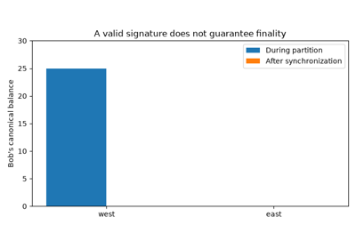
Nakamoto consensus: a payment, a fork, and a reorganization (2008)
2008 – How Many Confirmations? Nakamoto’s Double-Spend Calculation#
A merchant hands over goods once a payment has some confirmations. How many should the merchant wait for?
Waiting for more blocks on top of a payment is safer, because an attacker must secretly build a longer chain. Section 11 of the whitepaper computes how much safer. Take an attacker with hashrate share \(q\), the honest network with \(p = 1 - q\), and a merchant waiting for \(z\) confirmations. The attack runs like this:
The attacker pays the merchant on the public chain.
At the same time, the attacker secretly mines a chain in which that payment is replaced by one back to the attacker.
The merchant waits for \(z\) confirmations and hands over the goods.
If the secret chain ever becomes longer, the attacker publishes it. Nodes switch to it, and the payment to the merchant disappears.
The calculation follows the attack:
The attacker mines at \(q/p\) times the honest rate. So while the honest network finds \(z\) blocks, the attacker’s progress \(k\) is Poisson with mean \(\lambda = zq/p\). The Poisson formula below, \(\lambda^k e^{-\lambda}/k!\), is the chance of exactly \(k\) blocks.
An attacker with \(k \le z\) blocks still trails by \(z - k\). By the gambler’s ruin, it catches up with probability \((q/p)^{z-k}\).
An attacker with more blocks has already won.
So the attack fails only if \(k \le z\) and the attacker never catches up. Add up the chance of that over every \(k\), and subtract it from one:
Each term of the sum is “the chance the attacker has exactly \(k\) blocks” times “the chance it then never catches up”. \(P\) is the chance the attack succeeds.
The whitepaper tabulates \(P\). For example, it is 0.0009137 at \(q = 0.1\), \(z = 5\): about 1 in 1,100.
It also tabulates the \(z\) needed for \(P < 0.1\%\).
Later work refined the model (Rosenfeld 2014; Grunspan and Pérez-Marco 2017), but the exponential decay remains.
Implementation: blockchainkit.consensus.systems.catch_up.attacker_success_probability()
reproduces the whitepaper’s table.
References: S. Nakamoto, Bitcoin: A Peer-to-Peer Electronic Cash System (2008), section 11. Paper.
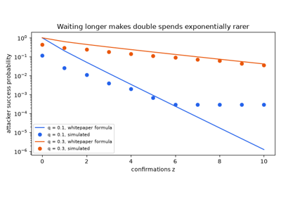
How many confirmations? Nakamoto’s double-spend calculation (2008)
2009 – Difficulty Retargeting#
If more miners join, blocks come faster. How does the chain keep a steady pace?
The difficulty is how hard the proof-of-work puzzle is, set by the target \(T\) of the 1997 entry. The whitepaper says difficulty is set by a moving average targeting an average number of blocks per hour. Bitcoin’s first release (January 2009) does it like this:
Every 2016 blocks, measure how long they actually took, \(t_{\text{actual}}\).
Compare with the expected time, \(t_{\text{expected}}\): 2016 blocks at ten minutes each, two weeks.
Clamp the measured time to between a quarter and four times the expected time.
Scale the target by the clamped time divided by the expected time.
In words: the new target is the old one times “how much too slow the blocks were”, but never by more than a factor of four either way.
A larger target is easier to hit. Blocks that came too slowly raise \(T\). Blocks that came too fast lower it.
The clamp limits manipulation and shocks. One odd period cannot move the difficulty very far.
Proof of work becomes a clock. It returns to about ten minutes per block, whatever the hashrate.
It also matters for selfish mining (2014 entry below):
Orphaned blocks are valid blocks left off the winning chain.
Orphaned blocks slow the chain, so retargeting lowers the difficulty.
A pool (a group of miners working together) that holds a larger share of the chain then also earns more blocks per hour.
Implementation: blockchainkit.consensus.systems.difficulty.retarget()
and blockchainkit.consensus.systems.difficulty.simulate_difficulty() use
Bitcoin’s clamp on an integer target, in a simulation with given hashrates;
they do not reproduce the off-by-one in Bitcoin’s interval count.
References: S. Nakamoto, Bitcoin: A Peer-to-Peer Electronic Cash System
(2008), section 4; Bitcoin v0.1 source code (2009), GetNextWorkRequired.
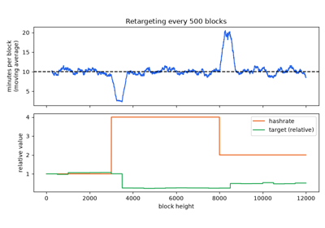
Difficulty retargeting: keeping ten-minute blocks (Bitcoin 2009)
2012 – Peercoin: Stake as an Alternative to Work#
Proof of work burns electricity on purpose. Is there another scarce resource that could do the same job?
King and Nadal’s Peercoin explored proof of stake alongside proof of work. The right to propose blocks could be weighted by coins held rather than by computation performed. The participants who hold stake and propose or vote on blocks are called validators.
Coins are as scarce as computation. An attacker still needs a large share of a limited resource.
But using them burns no electricity.
The basic building block is a weighted lottery, in which twice the stake
gives twice the chance of being selected. In Python this is
random.choices(validators, weights=stakes):
Validator \(i\) holds stake \(w_i\). Its chance of proposing is its fraction of all the stake.
A lottery alone is not consensus. A proof-of-stake protocol still needs:
an unbiasable source of randomness, one that no validator can steer;
voting;
penalties.
The following entries add them.
Implementation: blockchainkit.consensus.systems.pos.StakeSampler
samples integer weights exactly, from a private seeded generator. It does not
model Peercoin’s coin age, voting, slashing or finality; deployed protocols
derive randomness with RANDAO or verifiable random functions and must resist
validators grinding it.
References: S. King and S. Nadal, PPCoin: Peer-to-Peer Crypto-Currency with Proof-of-Stake (2012). Project paper.
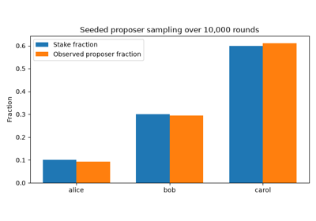
Proof of stake: a stake-weighted proposer lottery (Peercoin 2012)
2013 – GHOST: The Heaviest Observed Subtree#
Faster blocks mean faster payments. Why can’t a chain simply produce blocks every few seconds?
When blocks are frequent, honest miners often build on the same parent at once. The result is a fork: two or more sibling blocks with the same parent. The longest-chain rule keeps one and throws the others away. Sompolinsky and Zohar showed that this degrades security at high block rates:
An attacker’s private chain has no forks, so all its work counts.
Honest work split across sibling blocks only partly lengthens the main chain.
So an attacker can win with less than half the hashrate.
GHOST (Greedy Heaviest Observed SubTree) counts the work in sibling blocks too. Picture the blocks as a tree with the first block, genesis, at the root:
Start at genesis.
Among the current block’s children, pick the one whose subtree (the child plus everything built on it) holds the most work.
Move to that child and repeat.
Stop at a block with no children. That is the tip.
At each fork, GHOST chooses
That is max(children, key=subtree_work), inside a loop that walks down
from genesis.
Sibling blocks still add weight to their common branch.
Without forks, GHOST picks the same tip as the longest-chain rule.
Ethereum’s proof-of-work chain adopted GHOST’s uncle rewards (payments for sibling blocks) but kept heaviest-chain selection.
A GHOST variant, LMD-GHOST, became its fork-choice rule (its rule for picking the tip) with proof of stake.
Implementation: blockchainkit.consensus.systems.fork_choice.ghost_tip()
and blockchainkit.consensus.systems.fork_choice.subtree_work() apply
GHOST to a static block tree.
References: Y. Sompolinsky and A. Zohar, Secure High-Rate Transaction Processing in Bitcoin, Financial Cryptography 2015, LNCS 8975, 507–527 (2015); preprint IACR ePrint 2013/881. DOI.
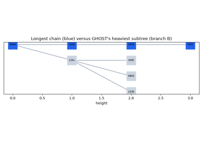
GHOST: follow the heaviest subtree (Sompolinsky and Zohar 2013)
2014 – Nothing at Stake, and Slashing#
A proof-of-work miner must spend electricity on one fork or another. In early 2014 critics pointed out a problem with proof of stake:
Signing a block costs a validator nothing.
So it can sign every fork for free and collect the reward whichever wins.
If every validator does this, forks never settle.
Buterin’s Slasher answered with penalties. Each validator locks up a deposit. Evidence of two signatures at the same height destroys it. This is called slashing.
A validator signs two different blocks at the same height.
Anyone who sees both signatures submits them to the chain as evidence.
The chain destroys the validator’s deposit.
Is slashing enough? Take:
reward \(R\) for voting on the winning fork;
probability \(p_A\) that fork \(A\) wins;
penalty \(S\);
and assume that a double vote is always caught.
Voting only for \(A\) pays when \(A\) wins. Voting for both always pays but is always punished:
so voting for one fork is the best response once \(S > (1 - p_A) R\).
The left formula is the average payoff of voting only for \(A\). The right is the payoff of voting for both. The penalty must exceed the extra reward that double voting would bring.
Slashing is now part of every major proof-of-stake protocol.
It works only while the deposit is still locked.
Keys whose deposits were already withdrawn can sign an alternative history at no cost. This is the long-range attack.
Implementation: blockchainkit.consensus.systems.stake_games.fork_voting_payoffs()
is a payoff table, not a protocol; real slashing needs on-chain evidence and
deposits that are still locked.
References: V. Buterin, Slasher: A Punitive Proof-of-Stake Algorithm, Ethereum blog (January 2014). Post.
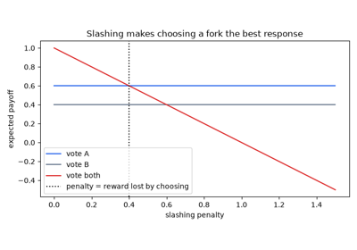
Nothing at stake: why proof of stake needs penalties (Buterin 2014)
2014 – Selfish Mining: Majority Is Not Enough#
Bitcoin’s incentive argument was that mining honestly pays best. Is that true?
Eyal and Sirer showed that a large pool can earn more than its fair share. It withholds the blocks it finds and releases them just in time to orphan honest blocks. In outline:
The pool finds a block and keeps it secret, so its private chain leads.
It keeps mining on its private chain.
When the honest network finds a block, the pool publishes enough of its private chain to match or beat it.
If the pool was only one block ahead, there is a tie. Some honest miners build on the pool’s block, some on the honest one.
The pool sometimes loses its own blocks too, but honest miners lose more. So the pool’s fraction of the final chain rises.
They modelled the strategy as a Markov chain: a state machine whose next state is chosen at random, depending only on the current state. Here the state is the pool’s private lead. They derived the pool’s share of the chain, for hashrate share \(\alpha\) and fraction \(\gamma\) of honest miners that build on the pool’s block during a tie:
\(R\) is the fraction of blocks on the final chain that are the pool’s. An honest pool would get exactly \(\alpha\).
\(R\) exceeds \(\alpha\) whenever \(\alpha > (1-\gamma)/(3-2\gamma)\).
That is a third of the hashrate when ties go to honest blocks (\(\gamma = 0\)).
It is any share when the pool wins every tie (\(\gamma = 1\)).
Honest miners then gain by joining the pool. So Bitcoin’s incentive argument needs more than an honest majority.
Implementation: blockchainkit.consensus.systems.selfish.selfish_mining_revenue(),
blockchainkit.consensus.systems.selfish.selfish_mining_threshold(), and
the state-machine simulation
blockchainkit.consensus.systems.selfish.simulate_selfish_mining(), in Eyal
and Sirer’s idealized model: propagation is instant apart from the tie share
\(\gamma\), and difficulty does not adjust.
References: I. Eyal and E. G. Sirer, Majority Is Not Enough: Bitcoin Mining Is Vulnerable, Financial Cryptography 2014, LNCS 8437, 436–454 (2014). DOI.
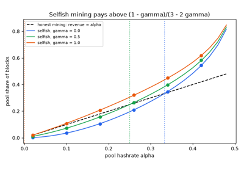
Selfish mining: majority is not enough (Eyal and Sirer 2014)
2017 – Casper FFG: Finality from Two-Thirds Votes#
A chain built by a lottery, as in proof of stake, never gives final answers, only ever more likely ones. Can a vote make a block final?
Buterin and Griffith’s Casper the Friendly Finality Gadget (FFG) overlays finality on any block-proposal mechanism. Some blocks are checkpoints, say every hundredth one. Validators vote on checkpoints, each vote weighted by stake:
A validator votes for a link \(s \to t\), from a source checkpoint \(s\) to a later target \(t\).
A checkpoint is justified when two thirds of the stake vote for a link to it from a justified checkpoint. Genesis starts justified.
A checkpoint is final when the link that justifies its direct successor starts from it.
Two slashing conditions say what a single validator must never do:
cast two distinct votes for the same target height;
cast a vote that surrounds another, starting before it and ending after it.
Write \(h(c)\) for the height of checkpoint \(c\). The two conditions are
The left is a double vote. The right is vote 1 surrounding vote 2.
They prove accountable safety. Two conflicting finalized checkpoints imply that validators holding at least a third of the stake violated a condition and can be punished. The argument is PBFT’s quorum intersection:
Two sets that each hold two thirds of the stake overlap in at least a third.
The validators in the overlap cannot have voted for both checkpoints without breaking one of the rules.
Where PBFT assumes the overlap contains an honest replica, Casper makes it identifiable and punishable.
Ethereum’s proof of stake combines Casper FFG with LMD-GHOST.
Implementation: blockchainkit.consensus.systems.finality.FinalityGadget
tracks justification, finality and offenses for a fixed validator set. It has no
deposits, rewards, inactivity leak or fork choice.
References: V. Buterin and V. Griffith, Casper the Friendly Finality Gadget, arXiv:1710.09437 (2017). Preprint.
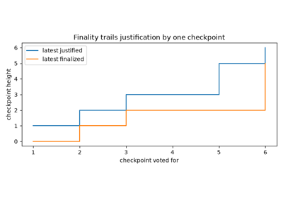
Casper FFG: finality by two-thirds votes and slashing (Buterin and Griffith 2017)
2017 – Algorand’s Cryptographic Sortition#
Voting protocols like PBFT need every node to talk to every other. That is too slow for millions of users. Can a small random committee vote instead, without an attacker knowing who to target?
Gilad, Hemo, Micali, Vlachos and Zeldovich built Algorand around a private lottery, sortition. Each round’s committee is drawn so that every unit of stake is a ticket. Each user checks their own tickets with a verifiable random function (VRF). A VRF is like a hash of the user’s secret key and an input. Only the key’s owner can compute it. It comes with a proof that anyone can check with the public key.
Every round has a public random seed.
Each user privately evaluates the VRF on the seed with their secret key.
The output decides how many of their tickets win, so how many committee seats they hold.
A user with seats sends their vote together with the VRF proof.
Everyone checks the proof before counting the vote.
A user with stake \(w\), out of total stake \(W\) and expected committee size \(\tau\), holds \(j\) seats with
Binomial means \(j\) is the number of heads in \(w\) coin flips, each with probability \(\tau/W\). On average a user’s seats are the committee size times their fraction of the stake.
Why it works:
The committee is secret. The function needs the user’s secret key. So nobody else knows who is on the committee until its members speak and attach their proofs. They therefore cannot be attacked in advance.
Attacking after it speaks is too late. Algorand replaces the committee after every step.
Splitting stake does not help. Independent binomials with the same probability add, so splitting stake across accounts leaves the distribution of seats unchanged. A Sybil attack, creating many fake identities, gains nothing.
Implementation: blockchainkit.consensus.systems.sortition.sortition().
A hash of the user’s secret replaces the verifiable random function, so others
cannot check a claimed draw.
References: Y. Gilad, R. Hemo, S. Micali, G. Vlachos, and N. Zeldovich, Algorand: Scaling Byzantine Agreements for Cryptocurrencies, 26th Symposium on Operating Systems Principles (SOSP), 51–68 (2017). DOI.
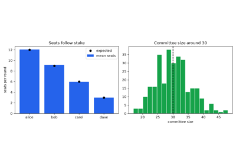
Cryptographic sortition: a secret, stake-weighted committee (Algorand 2017)